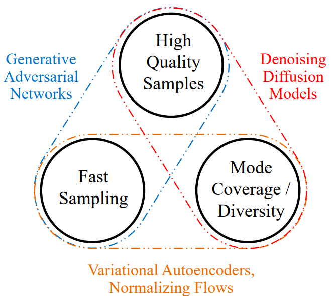

扩散模型#
在本课程中，我们将介绍扩散模型（Diffusion Models）。这种模型于 2020 年在论文《Denoising Diffusion Probabilistic Models》中首次提出，并因其在图像生成领域的高效性而广泛应用。扩散模型性能强大且易于引导，但其主要缺点是运行速度较慢。 本课程参考了 CVPR 2022 教程 和 博客文章，并使用了来自这两个资源的插图。
工作原理#
扩散模型主要通过两个阶段工作：噪声添加（扩散过程，Diffusion Process）和噪声去除（逆过程或去噪过程，Reverse/Denoising Process）。这两个阶段均为迭代过程，即噪声是逐步添加或移除的。
第一阶段：扩散过程#
扩散模型的第一步是从数据集中选取一张图像。数据集的图像分布通常是一个复杂的概率分布。扩散过程通过迭代方式逐步向图像添加高斯噪声，逐渐降低其复杂性，最终得到一个简单的高斯分布。 下图展示了扩散过程：

可以观察到分布逐渐简化（复杂度降低）：

扩散过程会逐步破坏输入图像的结构。
扩散过程由多个扩散步骤（Diffusion Steps）组成。在每一步中，会向图像添加预设量的高斯噪声。扩散步骤越多，每步添加的噪声越少。实践中，步骤越多，模型越稳定，生成的图像质量也越高，但计算时间会显著增加。原始论文中通常选择 1000 步。
第二阶段：逆过程#
为什么要向图像添加噪声？ 实际上，扩散过程是为了生成逆过程的训练数据。逆过程的目标是学习如何从高斯分布（通过扩散过程得到）恢复原始图像。我们希望能从扩散过程最后一步的高斯噪声中重建图像，进而通过采样高斯分布生成全新图像。
注解：扩散模型与正则化流（Normalizing Flows）或变分自编码器（VAE）有一定相似性。

在每一步去噪中，我们使用一个神经网络，其输入为当前步骤 \(t\) 的图像和扩散步骤 \(t\)，目标是预测在步骤 \(t-1 \Rightarrow t\) 中添加的高斯噪声参数（\(\mu\) 和 \(\sigma^2\)）。
注解 1：预测噪声实际上等同于预测步骤 \(t-1\) 的图像。 注解 2：所有步骤共用同一个网络，而非每步使用不同的网络。
扩散模型通常采用 U-Net 架构。想了解 U-Net 的详细结构，可参考卷积网络课程 3：图像分割应用。在实践中，强大的模型（如 Stable Diffusion）会使用结合 Transformer 架构的 U-Net 变体。

扩散模型是否属于分层 VAE？#
如前所述，扩散模型与 VAE 或 正则化流 有相似之处。 我们可以将其与 分层 VAE 进行类比。分层 VAE 是一种具有多步图像生成（解码器）的 VAE。
在扩散模型中：
扩散过程 对应 VAE 的 编码器（Encoder），
逆过程 对应 VAE 的 多层次解码步骤。
但两者在实现上存在显著差异：
扩散模型的“编码器”是固定的（不可训练），仅执行噪声添加；
潜在空间与输入图像的维度相同（VAE 则不同）；
扩散过程的所有步骤共用同一个模型，而分层 VAE 每层使用不同的模型。
类似的类比也适用于 正则化流。更多细节可参考 CVPR 2022 教程。
扩散模型的主要问题#
如前所述，扩散和去噪过程需要大量步骤。每一步去噪都需执行一次 U-Net 的前向传播。例如，1000 步扩散意味着生成一张图像需调用网络 1000 次。
扩散模型的核心问题由此显现：速度极慢。

图片来源：论文
扩散模型在图像生成方面的性能远超 GAN、VAE 和正则化流，因此是首选方案。
为此，必须开发各种技术以加速扩散模型。本课程不详细介绍加速方法，但 CVPR 2022 教程 有深入讨论（尽管此后又涌现了新技术）。 补充说明：目前已能在 十余步（而非原先的 1000 步）内生成高质量图像。
扩散模型目前是研究热点，仍有诸多问题待解决。例如：
为何扩散模型的性能远超 VAE 和正则化流？在深入理解扩散机制后，是否应重新关注这些替代方案？
能否实现单步生成高质量图像？
扩散架构是否可用于判别式任务（如分类）？
U-Net 是否是扩散模型的最优架构？
扩散模型能否扩展到其他数据类型（如文本）？